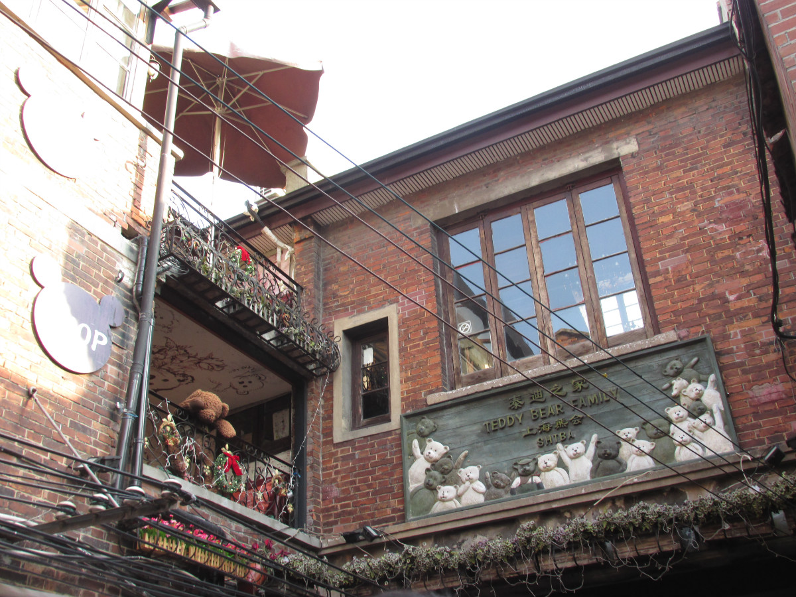

田子坊是由上海特有的石库门建筑群改建后形成的时尚地标性创意产业聚集区，也是不少艺术家的创意工作基地，人们往往将田子坊称为“新天地第二”。实际上，除了同样时尚外，她与新天地有着很多不同之处。泰康路上入驻的艺术品，工艺品商店已有40余家，入驻的工作室、设计室有20余家，政府搭台，企业唱戏。田子坊是上海泰康路艺术街的街标，雕塑上方的飘带将把五大洲四大洋的艺术家们联结在一起。 田子坊展现给人们的更多的是上海亲切、温暖和嘈杂的一面。
只要你在这条如今上海滩最有味道的弄堂里走一走，就不难体会田子坊与众不同的个性了。 走在田子坊，迂回穿行在迷宫般的弄堂里，一家家特色小店和艺术作坊就这样在不经意间跳入你的视线。从茶馆、露天餐厅、露天咖啡座、画廊、家居摆设到手工艺品，以及众多沪上知名的创意工作室，可谓应有尽有。 这个被人称为“新天地第二”的弄堂，最大的特色就是，它依然有很多居民在这里生活。有志成坊的门廊的弄堂，是1933建成的，散发古老的意味。还在使用的80年代标志装修的绿色信箱，在这种环境下，有一种出人意料的艺术美感。在闲散的下午，就着弄堂里的习习凉风，明媚的阳光透过玻璃窗，空中飘来一抹慵懒的咖啡香味，大有“偷得浮生半日闲”的意境。